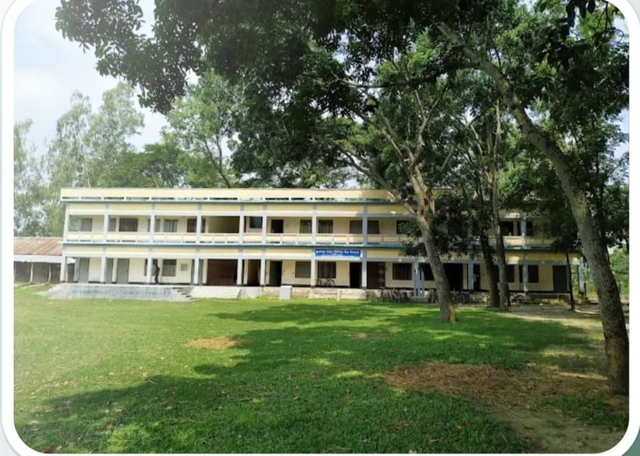

শিক্ষার্থী
প্রোফাইল, ভর্তি, উপস্থিতি ও ফলাফল
আরও জানুন →মগড়া পালস্ ইউনিয়ন উচ্চ বিদ্যালয়ের জন্য একটি সমন্বিত School ERP, Digital Learning ও AI Education Platform—শিক্ষার্থী, শিক্ষক, অভিভাবক এবং প্রশাসনের একক ডিজিটাল ঠিকানা।

প্রতিদিনের প্রশাসনিক কাজ থেকে শুরু করে পড়াশোনা, ফলাফল ও অভিভাবক যোগাযোগ—সবকিছু একই সিস্টেমে।
প্রোফাইল, ভর্তি, উপস্থিতি ও ফলাফল
আরও জানুন →GPA, মার্কশিট ও ফলাফল বিশ্লেষণ
আরও জানুন →নোট, MCQ, CQ ও অনলাইন পরীক্ষা
আরও জানুন →AI Tutor ও ব্যক্তিগত Study Plan
আরও জানুন →Attendance, Result, Digital Learning এবং AI Insights একসাথে ব্যবহার করে শিক্ষার্থীর অগ্রগতি নিয়মিত পর্যবেক্ষণ করা যাবে।
প্রশাসন থেকে প্রকাশিত গুরুত্বপূর্ণ তথ্য এখানে দেখাবে।
বিস্তারিত →পরীক্ষার সময়সূচি ও প্রয়োজনীয় নির্দেশনা।
বিস্তারিত →নতুন শিক্ষাসামগ্রী ও অনলাইন কার্যক্রম।
বিস্তারিত →১৯৪৬ খ্রি. প্রতিষ্ঠিত একটি মাধ্যমিক শিক্ষা প্রতিষ্ঠান।
প্রতিষ্ঠিত ১৯৪৬ খ্রি. • মগড়া, কালিহাতি, টাংগাইল • EIIN 114290
আপনার ব্যক্তিগত Login ID ও Password দিয়ে প্রবেশ করুন। শিক্ষার্থী, শিক্ষক, অভিভাবক ও প্রশাসনের জন্য আলাদা সুবিধা স্বয়ংক্রিয়ভাবে চালু হবে।
ব্যক্তিগত Login ID ব্যবহার করুন
প্রয়োজনে প্রশাসকের মাধ্যমে Password reset করুন।